Разложить многочлен на множители означает представить его в виде произведения двух или нескольких многочленов.
Примером разложения многочлена на множители является вынесение общего множителя за скобки, поскольку исходный многочлен обращается в произведение двух сомножителей, один из которых является одночленом, а другой многочленом.
Разложение многочлена на множители способом вынесения общего множителя за скобки
При вынесении общего множителя за скобки образуется произведение из двух сомножителей, один из которых является одночленом, а другой многочленом. Например:
6x + 3xy = 3x(2 + y)
В рамках изучения многочленов, одночлен принято считать многочленом, состоящим из одного члена. Поэтому, когда в многочлене выносится за скобки общий множитель, то говорят что исходный многочлен представлен в виде произведения многочленов.
В нашем примере многочлен 6x + 3xy был представлен в виде произведения многочленов 3x и (2 + y). По-другому говорят, что многочлен 6x + 3xy разложен на множители 3x и (2 + y)
Существуют также многочлены, в которых можно вынести за скобки такой общий множитель, который является двучленом. Например, рассмотрим многочлен 5a(x + y) + 7a(x + y). В этом многочлене общим множителем является двучлен (x + y). Вынесем его за скобки:
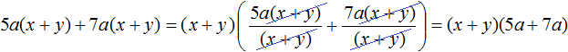
Разложение многочлена на множители способом группировки
Некоторые многочлены содержат группу членов, имеющих общий множитель. Такие группы можно заключать в скобки и далее выносить общий множитель за эти скобки. В результате получается разложение исходного многочлена на множители, которое называют разложением на множители способом группировки.
Рассмотрим следующий многочлен:
ax + ay + 3x + 3y
Члены ax и ay имеют общий множитель a. Выпишем эти члены и заключим их в скобки:
(ax + ay)
Далее в многочлене ax + ay + 3x + 3y члены 3x и 3y имеют общий множитель 3. Выпишем эти члены и тоже заключим их в скобки:
(3x + 3y)
Теперь соединим выражения (ax + ay) и (3x + 3y) знаком «плюс»
(ax + ay) + (3x + 3y)
В многочлене (ax + ay) вынесем за скобки общий множитель a, а в многочлене (3x + 3y) вынесем за скобки общий множитель 3. Делать это нужно в исходном выражении:
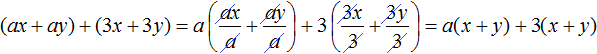
Далее замечаем, что двучлен (x + y) является общим множителем. Вынесем его за скобки. Продолжаем решение в исходном примере. В результате получим:
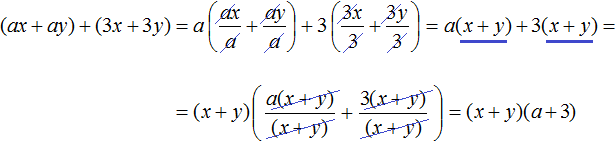
Запишем решение покороче, не расписывая подробно, как каждый член был разделен на общий множитель. Тогда решение получится более компактным:
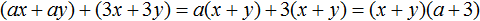
Чтобы проверить правильно ли мы разложили многочлен на множители, выполним умножение (x + y)(a + 3). Если мы всё сделали правильно, то получим многочлен ax + ay + 3x + 3y
(x + y)(a + 3) = ax + ay + 3x + 3y
Пример 2. Разложить многочлен 9x + ax − 9y − ay на множители способом группировки.
Члены 9x и −9y имеют общий множитель 9. А члены ax и −ay имеют общий множитель a. Сгруппируем их с помощью скобок, и объединим с помощью знака «плюс»
(9x − 9y) + (ax − ay)
В первой группе (9x − 9y) вынесем за скобки общий множитель 9. Во второй группе (ax − ay) вынесем за скобки за скобки общий множитель a
(9x − 9y) + (ax − ay) = 9(x − y) + a(x − y)
Далее вынесем за скобки двучлен (x − y)
(9x − 9y) + (ax − ay) = 9(x − y) + a(x − y) = (x − y)(9 + a)
Пример 3. Разложить многочлен ab − 3b + b2 − 3a на множители способом группировки.
Сгруппируем первый член ab с четвёртым членом −3a. А второй член −3b сгруппируем с третьим членом b2. Не забываем, что объединять группы нужно с помощью знака «плюс»
(ab − 3a) + (−3b + b2)
В первой группе вынесем за скобки общий множитель a, во второй группе — общий множитель b
(ab − 3a) + (−3b + b2) = a(b − 3) + b(−3 + b)
Во втором произведении b(−3 + b) в сомножителе (−3 + b) изменим порядок следования членов. Тогда получим b(b − 3)
(ab − 3a) + (−3b + b2) = a(b − 3) + b(b − 3)
Теперь вынесем за скобки общий множитель (b − 3)
(ab − 3a) + (−3b + b2) = a(b − 3) + b(b − 3) = (b − 3)(a + b)
Пример 4. Разложить многочлен x2y + x + xy2 + y + 2xy + 2 на множители способом группировки.
Сгруппируем первый член многочлена со вторым, третий с четвёртым, пятый с шестым:
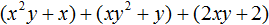
В первой группе вынесем за скобки общий множитель x, во второй группе — общий множитель y, в третьей группе — общий множитель 2
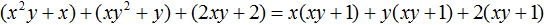
Далее замечаем, что многочлен (xy + 1) является общим множителем. Вынесем его за скобки:
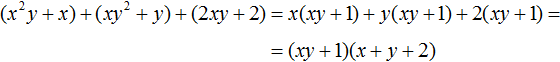
Разложение многочлена на множители по формуле квадрата суммы двух выражений
Формулы сокращённого умножения, которые мы рассматривали в прошлом уроке, можно применять для разложения многочленов на множители.
Вспомним, как выглядит формула квадрата суммы двух выражений:
(a + b)2 = a2 + 2ab + b2
Поменяем местами левую и правую часть, получим:
a2 + 2ab + b2 = (a + b)2
Левая часть этого равенства является многочленом, а правая часть — произведением многочленов, поскольку выражение (a + b)2 представляет собой перемножение двух сомножителей, каждый из которых равен многочлену (a + b).
Стало быть, если нам встретится выражение вида a2 + 2ab + b2, то мы можем представить его в виде произведения (a + b)(a + b). Иными словами, разложить на множители (a + b) и (a + b).
a2 + 2ab + b2 = (a + b)(a + b)
Пример 1. Разложить на множители многочлен 4x2 + 12xy + 9y2
Чтобы воспользоваться формулой a2 + 2ab + b2 = (a + b)2, нужно узнать чему в данном случае равна переменная a и чему равна переменная b.
Первый член многочлена 4x2 + 12xy + 9y2 является результатом возведения в квадрат одночлена 2x, поскольку (2x)2 = 4x2. Третий член 9y2 является результатом возведения в квадрат одночлена 3y, поскольку (3y)2 = 9y2, а член 12xy это есть удвоенное произведение членов 2x и 3y, то есть 2 × 2x × 3y = 12xy.
Очевидно, что переменная a в данном случае равна 2x, а переменная b равна 3y
a = 2x
b = 3y
Тогда можно сделать вывод, что когда-то выражение 4x2 + 12xy + 9y2 выглядело в виде квадрата суммы (2x + 3y)2, но в результате применения формулы квадрата суммы оно обратилось в многочлен 4x2 + 12xy + 9y2. Наша задача — вернуть ему былую форму, то есть представить в виде (2x + 3y)2
4x2 + 12xy + 9y2 = (2x + 3y)2
А поскольку (2x + 3y)2 это произведение двух сомножителей, каждый из которых равен многочлену (2x + 3y), то исходный многочлен 4x2 + 12xy + 9y2 можно представить в виде разложения на множители (2x + 3y) и (2x + 3y)
4x2 + 12xy + 9y2 = (2x + 3y)(2x + 3y)
Полностью решение можно записать так:
4x2 + 12xy + 9y2 = (2x)2 + 2 × 2x × 3y + (3y)2 = (2x + 3y)2 = (2x + 3y)(2x + 3y)
Пример 2. Разложить на множители многочлен x2 + 12x + 36
Первый член данного многочлена является результатом возведения в квадрат одночлена x, поскольку x2 = x2, третий член — результатом возведения в квадрат числа 6, поскольку 62 = 36, а член 12x это удвоенное произведение членов x и 6, поскольку 2 × x × 6 = 12x.
Воспользуемся формулой a2 + 2ab + b2 = (a + b)2. Роль переменной a играет одночлен x, а роль переменной b играет одночлен 6. Отсюда:
x2 + 12x + 36 = (x + 6)2
А поскольку (x + 6)2 это произведение двух сомножителей, каждый из которых равен многочлену (x + 6), то исходный многочлен x2 + 12x + 36 можно представить в виде разложения на множители (x + 6) и (x + 6)
x2 + 12x + 36 = (x + 6)(x + 6)
Разложение многочлена на множители по формуле квадрата разности двух выражений
Как и по формуле квадрата суммы двух выражений, многочлен можно разложить на множители по формуле квадрата разности двух выражений.
Формула квадрата разности двух выражений выглядит так:
(a − b)2 = a2 − 2ab + b2
Если в этой формуле поменять местами левую и правую часть, то получим:
a2 − 2ab + b2 = (a − b)2
Поскольку правая часть это произведение двух сомножителей, каждый из которых равен (a − b), то многочлен вида a2 − 2ab + b2 можно разложить на множители (a − b) и (a − b).
a2 − 2ab + b2 = (a − b)(a − b)
Пример 1. Разложить на множители многочлен 9x2 − 12xy + 4y2
Чтобы воспользоваться формулой a2 − 2ab + b2 = (a − b)2, нужно узнать чему в данном случае равна переменная a и чему равна переменная b.
Первый член данного многочлена является результатом возведения в квадрат одночлена 3x, поскольку (3x)2 = 9x2. Третий член 4y2 является результатом возведения в квадрат одночлена 2y, поскольку (2y)2 = 4y2, а член 12xy это удвоенное произведение членов 3x и 2y, то есть 2 × 3x × 2y = 12xy.
Очевидно, что переменная a в данном случае равна 3x, а переменная b равна 2y
a = 3x
b = 2y
Тогда можно сделать вывод, что когда-то выражение 9x2 − 12xy + 4y2 выглядело в виде квадрата разности (3x − 2y)2, но в результате применения формулы квадрата разности оно обратилось в многочлен 9x2 − 12xy + 4y2. Наша задача — вернуть ему былую форму, то есть представить в виде (3x − 2y)2
9x2 − 12xy + 4y2 = (3x − 2y)2
А поскольку (3x − 2y)2 это произведение двух сомножителей, каждый из которых равен многочлену (3x − 2y), то исходный многочлен 9x2 − 12xy + 4y2 можно представить в виде разложения на множители (3x − 2y) и (3x − 2y)
9x2 − 12xy + 4y2 = (3x − 2y)(3x − 2y)
Полностью решение можно записать так:
9x2 − 12xy + 4y2 = (3x)2 − 2 × 3x × 2y + (2y)2 = (3x − 2y)2 = (3x − 2y)(3x − 2y)
Пример 2. Разложить на множители многочлен x2 − 4x + 4
Воспользуемся формулой квадрата разности двух выражений:
x2 − 4x + 4 = x2 − 2 × x × 2 + 22 = (x − 2)2 = (x − 2)(x − 2)
Разложение многочлена на множители по формуле куба суммы двух выражений
Вспомним, как выглядит формула куба суммы двух выражений:
(a + b)3 = a3 + 3a2b + 3ab2 + b3
Поменяем местами левую и правую часть, получим:
a3 + 3a2b + 3ab2 + b3 = (a + b)3
Левая часть этого равенства является многочленом, а правая часть — произведением многочленов, поскольку выражение (a + b)3 представляет собой перемножение трёх сомножителей, каждый из которых равен многочлену (a + b).
Стало быть, если нам встретится выражение вида a3 + 3a2b +3ab2 + b3, то мы можем представить его в виде произведения (a + b)(a + b)(a + b). Иными словами, разложить на множители (a + b), (a + b) и (a + b).
a3 + 3a2b + 3ab2 + b3 = (a + b)(a + b)(a + b)
Пример 1. Разложить на множители многочлен m3 + 6m2n + 12mn2 + 8n3
Прежде чем применять формулу куба суммы, следует проанализировать данный многочлен. А именно, убедиться что перед нами действительно куб суммы двух выражений.
Чтобы убедиться, что исходное выражение является кубом суммы двух выражений, следует узнать чему в данном случае равна переменная a и чему равна переменная b.
Первый член данного многочлена является результатом возведения в куб одночлена m
m3 = m3
Последний член 8n3 является результатом возведения в куб одночлена 2n
(2n)3 = 8n3
Второй член 6m2n является утроенным произведением квадрата первого выражения m и последнего 2n
3 × m2 × 2n = 6m2n
Третий член 12mn2 является утроенным произведением первого выражения m и квадрата последнего выражения 2n
3 × m × (2n)2 = 3 × m × 4n2 = 12mn2
То есть исходный многочлен m3 + 6m2n + 12mn2 + 8n3 по всем параметрам соответствует кубу суммы двух выражений. Переменной a в данном многочлене соответствует m, а переменной b соответствует 2n
a = m
b = 2n
Тогда можно сделать вывод, что когда-то выражение m3 + 6m2n + 12mn2 + 8n3 выглядело в виде куба суммы (m + 2n)3, но в результате применения формулы куба суммы оно обратилось в многочлен m3 + 6m2n + 12mn2 + 8n3. Наша задача — вернуть ему былую форму, то есть представить в виде (m + 2n)3
m3 + 6m2n + 12mn2 + 8n3 = (m + 2n)3
А поскольку (m + 2n)3 это произведение трёх сомножителей, каждый из которых равен многочлену (m + 2n), то исходный многочлен m3 + 6m2n + 12mn2 + 8n3 можно представить в виде разложения на множители (m + 2n), (m + 2n) и (m + 2n)
m3 + 6m2n + 12mn2 + 8n3 = (m + 2n)(m + 2n)(m + 2n)
Пример 2. Разложить на множители многочлен 125x3 + 75x2 + 15x + 1
Первый член данного многочлена является результатом возведения в куб одночлена 5x
(5x)3 = 125x3
Последний член 1 является результатом возведения в куб одночлена 1
13 = 1
Второй член 75x2 является утроенным произведением квадрата первого выражения 5x и последнего 1
3 × (5x)2 × 1 = 3 × 25x2 = 75x2
Третий член 15x является утроенным произведением первого выражения 5x и квадрата второго выражения 1
3 × 5x × 12 = 15x
Воспользуемся формулой a3 + 3a2b + 3ab2 + b3 = (a + b)3. Роль переменной a играет одночлен 5x, а роль переменной b играет одночлен 1
a = 5x
b = 1
Поэтому,
125x3 + 75x2 + 15x + 1 = (5x + 1)3
А поскольку (5x + 1)3 это произведение трёх сомножителей, каждый из которых равен многочлену (5x + 1), то исходный многочлен 125x3 + 75x2 + 15x + 1 можно представить в виде разложения на множители (5x + 1), (5x + 1) и (5x + 1)
125x3 + 75x2 + 15x + 1 = (5x + 1)(5x + 1)(5x + 1)
Разложение многочлена на множители по формуле куба разности двух выражений
Как и по формуле куба суммы двух выражений, многочлен можно разложить на множители по формуле куба разности двух выражений.
Вспомним, как выглядит формула куба разности двух выражений:
(a − b)3 = a3 − 3a2b + 3ab2 − b3
Если в этой формуле поменять местами левую и правую часть, то получим:
a3 − 3a2b + 3ab2 − b3 = (a − b)3
Поскольку правая часть это произведение трёх сомножителей, каждый из которых равен (a − b), то многочлен вида a3 − 3a2b + 3ab2 − b3 можно разложить на множители (a − b), (a − b) и (a − b).
a3 − 3a2b + 3ab2 − b3 = (a − b)(a − b)(a − b)
Пример 1. Разложить на множители многочлен 64 − 96x + 48x2 − 8x3
Прежде чем применять формулу куба разности, следует проанализировать данный многочлен. А именно, убедиться что перед нами действительно куб разности двух выражений.
Чтобы убедиться, что исходное выражение является кубом разности двух выражений, следует узнать чему в данном случае равна переменная a и чему равна переменная b.
Первый член данного многочлена является результатом возведения в куб одночлена 4
43 = 64
Последний член 8x3 является результатом возведения в куб одночлена 2x
(2x)3 = 8x3
Второй член 96x является утроенным произведением квадрата первого выражения 4 и последнего 2x
3 × 42 × 2x = 3 × 16 × 2x = 96x
Третий член 48x2 является утроенным произведением первого выражения 4 и квадрата второго выражения 2x
3 × 4 × (2x)2 = 3 × 4 × 4x2 = 48x2
Видим, что исходный многочлен 64 − 96x + 48x2 − 8x3 по всем параметрам соответствует кубу разности двух выражений. Переменной a в данном многочлене соответствует 4, а переменной b соответствует 2x
a = 4
b = 2x
Тогда можно сделать вывод, что когда-то выражение 64 − 96x + 48x2 − 8x3 выглядело в виде куба разности (4 − 2x)3, но в результате применения формулы куба разности оно обратилось в многочлен 64 − 96x + 48x2 − 8x3. Наша задача — вернуть ему былую форму, то есть представить в виде (4 − 2x)3
64 − 96x + 48x2 − 8x3 = (4 − 2x)3
А поскольку (4 − 2x)3 это произведение трёх сомножителей, каждый из которых равен (4 − 2x), то исходный многочлен 64 − 96x + 48x2 − 8x3 можно представить в виде разложения на множители (4 − 2x), (4 − 2x) и (4 − 2x)
64 − 96x + 48x2 − 8x3 = (4 − 2x)(4 − 2x)(4 − 2x)
Пример 2. Разложить на множители многочлен 27 − 135x + 225x2 − 125x3
Первый член данного многочлена является результатом возведения в куб одночлена 3
33 = 27
Последний член 125 является результатом возведения в куб одночлена 5x
(5x)3 = 125x3
Второй член 135x является утроенным произведением квадрата первого выражения 3 и последнего 5x
3 × 32 × 5x = 3 × 9 × 5x = 135x
Третий член 225x2 является утроенным произведением первого выражения 3 и квадрата второго выражения 5x
3 × 3 × (5x)2 = 3 × 3 × 25x2 = 225x2
Воспользуемся формулой a3 − 3a2b + 3ab2 − b3 = (a − b)3. Роль переменной a играет одночлен 3, а роль переменной b играет одночлен 5x
a = 3
b = 5x
Поэтому,
27 − 135x + 225x2 − 125x3 = (3 − 5x)3
А поскольку (3 − 5x)3 это произведение трёх сомножителей, каждый из которых равен многочлену (3 − 5x), то исходный многочлен 27 − 135x + 225x2 − 125x3 можно представить в виде разложения на множители (3 − 5x), (3 − 5x) и (3 − 5x)
125x3 + 75x2 + 15x + 1 = (3 − 5x)(3 − 5x)(3 − 5x)
Разложение многочлена на множители по формуле разности квадратов двух выражений
Вспомним, как выглядит формула умножения разности двух выражений на их сумму:
(a − b)(a + b) = a2 − b2
Если в этой формуле поменять местами левую и правую часть, то получим:
a2 − b2 = (a − b)(a + b)
Эту формулу называют разностью квадратов. Она позволяет разложить выражение вида a2 − b2 на множители (a − b) и (a + b).
Пример 1. Разложить на множители многочлен 16x2 − 25y2
Чтобы воспользоваться формулой a2 − b2 = (a − b)(a + b), следует узнать чему в данном случае равна переменная a и чему равна переменная b.
Первый член 16x2 является результатом возведения в квадрат одночлена 4x
(4x)2 = 16x2
Второй член 25y2 является результатом возведения в квадрат одночлена 5y
(5y)2 = 25y2
То есть в данном случае переменной a соответствует одночлен 4x, а переменной b соответствует одночлен 5y
a = 4x
b = 5y
Теперь можно воспользоваться формулой a2 − b2 = (a − b)(a + b). Подставим в неё наши значения a и b
(4x)2 − (5y)2 = (4x − 5y)(4x + 5y)
Полностью решение можно записать так:
16x2 − 25y2 = (4x)2 − (5y)2 = (4x − 5y)(4x + 5y)
Для проверки можно выполнить умножение (4x − 5y)(4x + 5y). Если мы всё сделали правильно, то должны получить 16x2 − 25y2
(4x − 5y)(4x + 5y) = 16x2 − 20xy + 20xy − 25y2 = 16x2 − 25y2
Пример 2. Разложить на множители многочлен x2 − y2
В данном случае переменной a соответствует x, а переменной b соответствует y. Тогда по формуле квадрата разности имеем:
x2 − y2 = (x − y)(x + y)
Случай как в данном примере является наиболее простым, поскольку здесь сразу видно чему равно a и чему равно b.
Чаще всего члены, из которых состоит исходная разность, являются результатами возведения во вторую степень каких-нибудь одночленов. Чтобы узнать чему в таком случае равны a и b, нужно как в первом примере представить члены исходной разности в виде одночленов возведённых в квадрат.
Например, чтобы разложить многочлен 4x4 − 9y6 на множители, нужно исходные члены представить в виде одночленов возведённых в квадрат. Первый член в виде одночлена, возведенного в квадрат, можно записать как (2x2)2, поскольку вычисление этого выражение даёт в результате 4x4
(2x2)2 = 4x4
А член 9y6 в виде одночлена, возведенного в квадрат, можно записать как (3y3)2, поскольку вычисление этого выражение даёт в результате 9y6
(3y3)2 = 9y6
Теперь мы знаем, чему равны a и b. Они равны 2x2 и 3y3 соответственно. Подставим их в формулу a2 − b2 = (a − b)(a + b)
(2x2)2 − (3y3)2 = (2x2 − 3y3)(2x2 + 3y3)
Полностью решение можно записать так:
4x4 − 9y6 = (2x2)2 − (3y3)2 = (2x2 − 3y3)(2x2 + 3y3)
Несмотря на простоту разложения по формуле разности квадратов, частые ошибки приходятся именно на эти задачи. Чтобы убедиться, что задача решена правильно, не мешает выполнить умножение в получившемся разложении. Если задача решена правильно, то должен получиться изначальный многочлен.
Проверим умножением данный пример. У нас должен получиться многочлен 4x4 − 9y6
(2x2 − 3y3)(2x2 + 3y3) = 2x2(2x2 + 3y3) − 3y3(2x2 + 3y3)
= 4x4 + 6x2y3 − 6x2y3 − 9y6 = 4x4 − 9y6
Пример 4. Разложить на множители многочлен 81 − 64
Представим члены исходной разности в виде одночленов возведенных в квадрат. Далее воспользуемся формулой разности квадратов:
81 − 64 = 92 − 82 = (9 − 8)(9 + 8)
Разложение многочлена на множители по формуле сумме кубов двух выражений
Мы помним, что произведение суммы двух выражений и неполного квадрата их разности равно сумме кубов этих выражений:
(a + b)(a2 − ab + b2) = a3 + b3
Если в этой формуле поменять местами левую и правую часть, то получим формулу, называемую суммой кубов двух выражений:
a3 + b3 = (a + b)(a2 − ab + b2)
Эта формула позволяет разложить выражение вида a3 + b3 на множители (a + b) и (a2 − ab + b2).
Пример 1. Разложить на множители многочлен 27x3 + 64y3
Представим члены 27x3 и 64y3 в виде одночленов, возведённых в куб
27x3 + 64y3 = (3x)3 + (4y)3
Теперь воспользуемся формулой суммы кубов. Переменная a в данном случае равна 3x, переменная b равна 4y
27x3 + 64y3 = (3x)3 + (4y)3 = (3x + 4y)((3x)2 − 3x × 4y + (4y)2) =
(3x + 4y)(9x2 − 12xy + 16y2)
Пример 2. Разложить на множители многочлен 125 + 8
Представим члены 125 и 8 в виде одночленов, возведённых в куб:
125 + 8 = 53 + 23
Далее воспользуемся формулой суммы кубов:
125 + 8 = 53 + 23 = (5 + 2)(25 − 10 + 4)
Разложение многочлена на множители по формуле разности кубов двух выражений
Произведение разности двух выражений и неполного квадрата их суммы равно разности кубов этих выражений:
(a − b)(a2 + ab + b2) = a3 − b3
Если в этой формуле поменять местами левую и правую часть, то получим формулу, называемую разностью кубов двух выражений:
a3 − b3 = (a − b)(a2 + ab + b2)
Эта формула позволяет разложить выражение вида a3 − b3 на множители (a − b) и (a2 + ab + b2).
Пример 1. Разложить на множители многочлен 64x3 − 27y3
Представим члены 64x3 и 27y3 в виде одночленов, возведённых в куб:
64x3 − 27y3 = (4x)3 − (3y)3
Теперь воспользуемся формулой разности кубов. Переменная a в данном случае равна 4x, переменная b равна 3y
64x3 − 27y3 = (4x)3 − (3y)3 = (4x − 3y)((4x)2 + 4x × 3y + (3y)2) =
(4x − 3y)(16x2 + 12xy + 9y2)
Пример 2. Разложить на множители многочлен 64 − 27
Представим члены 64 и 27 в виде одночленов, возведённых в куб:
64 − 27 = 43 − 33 = (4 − 3)(16 + 12 + 9)
Пример 3. Разложить на множители многочлен 125x3 − 1
Представим члены 125x3 и 1 в виде одночленов, возведённых в куб:
125x3 − 1 = (5x)3 − 13
Теперь воспользуемся формулой разности кубов. Переменная a в данном случае равна 5x, переменная b равна 1
125x3 − 1 = (5x)3 − 13 = (5x − 1)((5x)2 + 5x × 1 + 12) =
(5x − 1)(25x2 + 5x + 1)
Разложение многочлена на множители различными способами
К некоторым многочленам можно применять различные способы разложения на множители. Например, к одному многочлену можно применить способ вынесения общего за скобки, а затем воспользоваться одной из формул сокращённого умножения.
Пример 1. Разложить на множители многочлен ax2 − ay2
В данном многочлене содержится общий множитель a. Вынесем его за скобки:
ax2 − ay2 = a(x2 − y2)
При этом в скобках образовался многочлен, который является разностью квадратов. Применив формулу разности квадратов. Тогда получим:
ax2 − ay2 = a(x2 − y2) = a(x − y)(x + y)
Пример 2. Разложить на множители многочлен 3x2 + 6xy + 3y2
Вынесем за скобки общий множитель 3
3x2 + 6xy + 3y2 = 3(x2 + 2xy + y2)
В скобках образовался многочлен, который является квадратом суммы двух выражений, а именно выражений x и y. Тогда этот квадрат суммы можно представить как (x + y)2 и далее записать в виде двух сомножителей, каждый из которых равен (x + y)
3x2 + 6xy + 3y2 = 3(x2 + 2xy + y2) = 3(x + y)2 = 3(x + y)(x + y)
Задания для самостоятельного решения
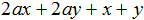
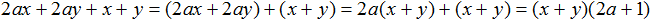
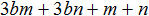
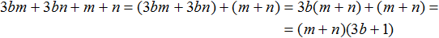
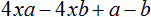
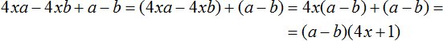
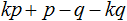
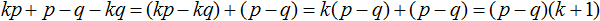
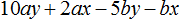
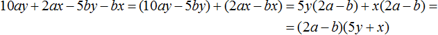
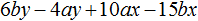
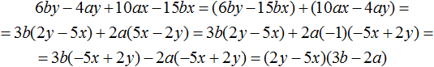